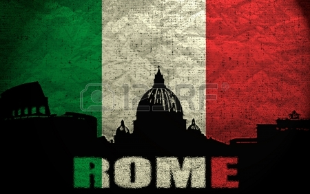

Rome is a city and special comune (named "Roma Capitale") in Italy. Rome is the capital of Italy and of the Lazio region. With 2.9 million residents in 1,285 km2 (496.1 sq mi), it is also the country's largest and most populated comune and fourth-most populous city in the European Union by population within city limits. The Metropolitan City of Rome has a population of 4.3 million residents. The city is located in the central-western portion of the Italian Peninsula, within Lazio (Latium), along the shores of Tiber river. Vatican City is an independent country within the city boundaries of Rome, the only existing example of a country within a city: for this reason Rome has been often defined as capital of two states.

Rome's history spans more than two and a half thousand years.
While Roman mythology dates the founding of Rome at only around 753 BC,
the site has been inhabited for much longer, making it one of the oldest
continuously occupied sites in Europe. The city's early population originated
from a mix of Latins, Etruscans and Sabines. Eventually, the city successively became
the capital of the Roman Kingdom, the Roman Republic and the Roman Empire, and is regarded as
one of the birthplaces of Western civilization and as the first ever metropolis. It is referred
to as "Roma Aeterna" (The Eternal City) and "Caput Mundi" (Capital of the World), two central notions in ancient Roman culture.